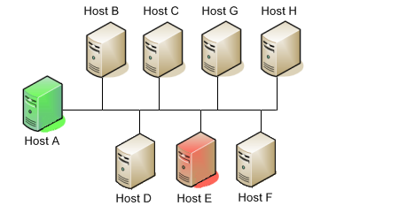

Dieser Abschnitt beschreibt einige Szenarien zum Implementieren von redundanten Überwachungs-Hosts auf verschiedenen Arten von Netzwerk-Layouts. Mit redundanten Hosts können Sie die Überwachung Ihres Netzwerkes aufrecht erhalten, wenn der primäre Host, auf dem Icinga läuft, ausfällt oder wenn Teile Ihres Netzwerkes unerreichbar werden.
Anmerkung: Wenn Sie gerade lernen, wie Icinga zu nutzen ist, würden wir empfehlen, Redundanz so lange nicht zu implementieren, bis Sie mit den Voraussetzungen vertraut sind. Redundanz ist ein relativ komplexes Thema und es ist noch schwieriger, es zu implementieren.
Bevor Sie überhaupt daran denken können, Redundanz mit Icinga zu implementieren, müssen Sie mit folgenden Dingen vertraut werden...
Implementieren von Eventhandlern für Hosts und Services
Erteilen von externen Befehlen an Icinga über Shell-Scripts
Ausführen von Plugins auf entfernten Hosts mit Hilfe des NRPE Addons oder einer anderen Methode
Überprüfen des Zustands des Icinga-Prozesses mit dem check_nagios Plugin
Jedes dieser Beispiel-Scripte, die wir in dieser Dokumentation benutzen, finden Sie im eventhandlers/-Unterverzeichnis der Icinga-Distribution. Vielleicht müssen Sie sie modifizieren, damit sie auf Ihrem System funktionieren...
Dies ist eine einfache (und harmlose) Methode, redundante Überwachungs-Hosts zu implementieren, und es wird nur gegen eine begrenzte Anzahl von Ausfällen schützen. Komplexere Setups werden benötigt, um intelligentere Redundanz, bessere Redundanz über verschiedene Netzwerk-Segmente hinweg zu bieten.
Das Ziel dieser Art von Redundanz-Implementierung ist einfach. Sowohl der "Master"- als auch der "Slave"-Host überwachen die gleichen Hosts und Services auf dem Netzwerk. Unter normalen Umständen wird nur der "Master"-Host Benachrichtigungen an Kontakte versenden. Wir wollen, dass der "Slave"-Host die Benachrichtigung von Kontakten übernimmt, wenn:
der "Master"-Host, auf dem Icinga läuft, "down" ist oder...
der Icinga-Prozess auf dem "Master"-Host aus irgendeinem Grund stoppt
Das untenstehende Diagramm zeigt ein sehr simples Netzwerk-Setup. Bei diesem Szenario nehmen wir an, dass auf den Hosts A und E Icinga läuft und alle gezeigten Hosts überwacht werden. Host A ist der "Master"-Host und Host E der "Slave"-Host.
 |
Auf dem Slave-Host (Host E) wird die ursprüngliche enable_notifications-Direktive deaktiviert, so dass dadurch der Versand von Host- oder Service-Benachrichtigungen verhindert wird. Sie sollten auch sicherstellen, dass die check_external_commands-Direktive deaktiviert ist. Das war einfach genug...
Als nächstes sollten wir die Unterschiede zwischen den Objekt-Konfigurationsdatei von Master- und Slave-Host(s) betrachten...
Wir gehen davon aus, dass Sie den Master-Host (Host A) so konfiguriert haben, dass er alle Services auf den gezeigten Hosts des Diagramms überwacht. Der Slave-Host (Host E) sollte die gleichen Hosts und Services überwachen, mit folgenden Zusätzen in der Konfigurationsdatei...
Die Host-Definition für Host A (in der Host-Konfigurationsdatei von Host E) sollte einen Host-Eventhandler enthalten. Der Name für den Host-Eventhandler lautet handle-master-host-event.
Die Konfigurationsdatei auf Host E enthält einen Service, der den Status des Icinga-Prozesses auf Host A prüft. Lassen Sie uns annehmen, dass diese Prüfung das check_nagios-Plugin auf Host A aufruft. Das kann durch eine der in den FAQ beschriebenen Methoden erfolgen.
Die Service-Definition für den Icinga-Prozess auf Host A sollte einen Eventhandler-Eintrag enthalten. Als Namen für diese Service-Eventhandler wählen wir handle-master-proc-event.
Es ist wichtig anzumerken, dass Host A (der Master-Host) keine Ahnung von Host E (dem Slave-Host) hat. In diesem Szenario besteht ganz einfach keine Notwendigkeit dazu. Natürlich können Sie von Host A Services auf Host E überwachen, aber das hat nichts mit der Implementierung von Redundanz zu tun...
Wir müssen kurz innehalten und beschreiben, wie die Befehlsdefinitionen für die Eventhandler auf dem Slave-Host aussehen. Hier ist ein Beispiel...
define command{
command_name handle-master-host-event
command_line /usr/local/icinga/libexec/eventhandlers/handle-master-host-event $HOSTSTATE$ $HOSTSTATETYPE$
}
define command{
command_name handle-master-proc-event
command_line /usr/local/icinga/libexec/eventhandlers/handle-master-proc-event $SERVICESTATE$ $SERVICESTATETYPE$
}
Dies setzt voraus, dass Sie die Eventhandler-Scripte im Verzeichnis /usr/local/icinga/libexec/eventhandlers abgelegt haben. Sie können sie ablegen, wohin Sie wollen, aber dann müssen Sie die beigefügten Beispiele anpassen.
Okay, lassen Sie uns nun einen Blick darauf werden, wie die Eventhandler-Scripte aussehen...
Host-Eventhandler (handle-master-host-event):
#!/bin/sh
# Only take action on hard host states...
case "$2" in
HARD)
case "$1" in
DOWN)
# The master host has gone down!
# We should now become the master host and take
# over the responsibilities of monitoring the
# network, so enable notifications...
/usr/local/icinga/libexec/eventhandlers/enable_notifications
;;
UP)
# The master host has recovered!
# We should go back to being the slave host and
# let the master host do the monitoring, so
# disable notifications...
/usr/local/icinga/libexec/eventhandlers/disable_notifications
;;
esac
;;
esac
exit 0
Service-Eventhandler (handle-master-proc-event):
#!/bin/sh
# Only take action on hard service states...
case "$2" in
HARD)
case "$1" in
CRITICAL)
# The master Icinga process is not running!
# We should now become the master host and
# take over the responsibility of monitoring
# the network, so enable notifications...
/usr/local/icinga/libexec/eventhandlers/enable_notifications
;;
WARNING)
UNKNOWN)
# The master Icinga process may or may not
# be running.. We won't do anything here, but
# to be on the safe side you may decide you
# want the slave host to become the master in
# these situations...
;;
OK)
# The master Icinga process running again!
# We should go back to being the slave host,
# so disable notifications...
/usr/local/icinga/libexec/eventhandlers/disable_notifications
;;
esac
;;
esac
exit 0
Auf dem Slave-Host (Host E) sind anfänglich die Benachrichtigungen deaktiviert, so dass er keine Host- oder Service-Benachrichtigungen versendet, solange der Icinga-Prozess auf dem Master-Host (Host A) noch läuft.
Der Icinga-Prozess auf dem Slave-host (Host E) wird zum Master-Host, wenn...
der Master-Host (Host A) "down" geht und der handle-master-host-event -Host-Eventhandler ausgeführt wird.
der Icinga-Prozess auf dem Master-Host (Host A) aufhört zu arbeiten und der handle-master-proc-event -Service-Eventhandler ausgeführt wird.
Wenn bei dem Icinga-Prozess auf dem Slave-Host (Host E) Benachrichtigungen aktiviert sind, kann er Benachrichtigungen über jegliche Host- und Service-Probleme und Erholungen versenden. An diesem Punkt hat Host E die Verantwortlichkeiten über die Benachrichtigung von Kontakten über Host- und Service-Probleme übernommen!
Der Icinga-Prozess auf Host E wird wieder zum Host-Slave, wenn...
sich Host A wieder erholt und der handle-master-host-event -Host-Eventhandler ausgeführt wird.
sich der Icinga-Prozess auf Host A wieder erholt und den handle-master-proc-event -Service-Eventhandler ausführt.
Wenn bei dem Icinga-Prozess auf dem Slave-Host (Host E) Benachrichtigungen deaktiviert sind, wird er keine Benachrichtigungen mehr über Host- und Service-Probleme und Erholungen versenden. An diesem Punkt hat Host E die Verantwortlichkeiten über die Benachrichtigung von Kontakten über Host- und Service-Probleme an Host A übergeben. Alles ist wieder so, als wir angefangen haben!
Redundanz bei Icinga ist in keinster Weise perfekt. Eins der offenkundigeren Probleme ist die Verzögerung zwischen dem Ausfall von Host A und der Übernahme durch Host E. Das ist bedingt durch folgende Dinge...
die Zeit zwischen dem Ausfall des Master-Host und dem ersten Mal, dass der Slave-Host ein Problem entdeckt
die Zeit, die benötigt wird, um festzustellen, dass der Master-Host wirklich ein Problem hat (unter Verwendung von Host- oder Service-Prüfwiederholungen auf dem Slave-Host)
die Zeit zwischen der Ausführung des Eventhandlers und der Zeit, zu der Icinga das nächste Mal auf externe Befehle prüft
Sie können diese Verzögerung minimieren durch...
eine hohe Frequenz von (Wiederholungs-) Prüfungen für Services auf Host E. Das kann durch die check_interval- und retry_interval-Optionen in jeder Service-Definition erreicht werden.
eine Zahl der Host-Wiederholungsprüfungen für Host A (auf Host E), die eine schnelle Erkennung von Host-Problemen erlaubt. Das wird erreicht durch das max_check_attempts-Argument in der Host-Definition.
erhöhen der Frequenz der external command-Prüfungen auf Host E. Dies wird erreicht durch die Anpassung der command_check_interval-Option in der Hauptkonfigurationsdatei.
Wenn sich Icinga auf Host A erholt, gibt es ebenfalls eine Verzögerung, bevor Host E wieder zu einem Slave-Host wird. Das wird durch folgende Dinge beeinflusst...
die Zeit zwischen der Erholung des Master-Hosts und der Zeit, zu der der Icinga-Prozess auf Host E die Erholung erkennt
die Zeit zwischen der Ausführung des Eventhandlers auf Host A und der Zeit, zu der Icinga-Prozess auf Host E das nächste Mal auf externe Befehle prüft
Die genaue Verzögerung zwischen dem Übergang der Verantwortlichkeiten hängt davon ab, wieviele Services Sie definiert haben, dem Intervall, in dem Services geprüft werden, und einer Menge pures Glück. Auf jeden Falls ist es besser als nichts.
Eins sollten Sie beachten: Wenn Host A "down" geht, werden bei Host E die Benachrichtigungen aktiviert und er übernimmt die Verantwortung für das Informieren der Kontakte bei Problemen. Wenn sich Host A wieder erholt, werden bei Host E die Benachrichtigungen deaktiviert. Falls der Icinga-Prozess - wenn sich Host A erholt - auf Host A nicht sauber startet, gibt es eine Zeitspanne, während der keiner der beiden Hosts die Kontakte über Probleme informiert! Glücklicherweise berücksichtigt die Service-Prüflogik in Icinga diesen Umstand. Das nächste Mal, wenn der Icinga-Prozess auf Host E den Status des Icinga-Prozesses auf Host A prüft, wird er feststellen, dass dieser nicht läuft. Auf Host E werden dann wieder die Benachrichtigungen aktiviert und er wird erneut die Verantwortung für die Benachrichtigung der Kontakte übernehmen.
Der exakte Wert für die Zeit, während der keiner der Hosts das Netzwerk überwacht, ist schwer zu ermitteln. Offensichtlich kann diese Zeit durch die Erhöhung der Frequenz von Service-Prüfungen (auf Host E) für Host A minimiert werden. Der Rest ist purer Zufall, aber die gesamte "Blackout"-Zeit sollte nicht allzu hoch sein.
Failover-Überwachung ist ähnlich wie die redundante Überwachung (wie beschrieben in Szenario 1).
Das grundlegende Ziel der Failover-Überwachung besteht darin, dass der Icinga-Prozess auf dem Slave-Host untätig ist, während der Icinga-Prozess auf dem Master-Host läuft. Wenn der Prozess auf dem Master-Host stoppt (oder der Host "down" geht), übernimmt der Icinga-Prozess auf dem Slave-Host die gesamte Überwachung.
Während es Ihnen die in Szenario 1 beschriebene Methode erlaubt, weiterhin Benachrichtigungen zu erhalten, wenn der Master-Host "down" geht, gibt es einige Fallen. Das größte Problem besteht darin, dass der Slave-Host die gleichen Hosts und Services wie der Master zur gleichen Zeit wie der Master überwacht! Dies kann Probleme durch übermäßigen Traffic und Load auf den überwachten Maschinen verursachen, wenn Sie viele Services definiert haben. Hier nun, wie Sie das Problem umgehen können.
Deaktivieren Sie aktive Service-Prüfungen und Benachrichtigungen auf dem Slave-Host durch die execute_service_checks- und die enable_notifications-Direktiven. Dies wird den Slave-Host davon abhalten, Services und Hosts zu überwachen und Benachrichtigungen zu versenden, während der Icinga-Prozess auf dem Master-Host noch läuft. Stellen Sie außerdem sicher, dass die check_external_commands-Direktive auf dem Slave-Host aktiviert ist.
Setzen Sie einen cron-Job auf dem Slave-Host auf, der periodisch (sagen wir jede Minute) läuft und den Status des Icinga-Prozesses auf dem Master-Host (mit dem check_nrpe auf dem Slave-Host und den nrpe daemon und check_nagios-Plugins auf dem Master-Host) prüft. Das Script sollte den Return-Code des check_nrpe-Plugins prüfen. Falls es einen nicht-OK-Status zurückliefert, sollte das Script den entsprechenden Befehl an das external command file senden, um sowohl die Benachrichtigungen als auch die aktiven Service-Prüfungen zu aktivieren. Falls das Plugin einen OK-Status zurückliefert, sollte das Script Befehle an das external command file senden, um sowohl Benachrichtigungen als auch aktive Prüfungen zu deaktivieren.
Auf diese Weise läuft jeweils nur ein Prozess, der Hosts und Services prüft, was wesentlich effizienter ist als alles doppelt zu überwachen.
Auch von Interesse: Sie müssen nicht wie in Szenario 1 beschrieben die Host- und Service-Handler definieren, weil die Dinge anders behandelt werden.
An diesem Punkt haben Sie ein sehr einfaches Failover-Überwachungs-Setup implementiert. Trotzdem gibt es einen weiteren Punkt, den Sie berücksichtigen sollten, damit die Dinge besser laufen.
Das große Problem dabei, wie die Dinge bisher konfiguriert sind, besteht darin, dass der Slave-Host nicht den aktuellen Status von Hosts und Services kennt, wenn er die Überwachung übernimmt. Ein Weg, dieses Problem zu lösen, ist es, die ocsp command-Option auf dem Master-Host zu aktivieren und alle Service-Prüfergebnisse mit dem nsca Addon an den Slave-Host zu schicken. Der Slave-Host wird dann aktuelle Status-Informationen für alle Services haben, wenn er die Überwachung übernimmt. Weil aktive Service-Prüfungen auf dem Slave-Host nicht aktiviert sind, werden sie nicht ausgeführt. Host-Prüfungen hingegen werden nach Bedarf ausgeführt. Das bedeutet, dass sowohl Master- als auch Slave-Host Host-Prüfungen ausführen, wenn sie benötigt werden, was kein Problem darstellen sollte, weil die Mehrzahl der Überwachung Service-Prüfungen betrifft.
Das ist eigentlich alles, was das Setup betrifft.
© 1999-2009 Ethan Galstad, 2009-2017 Icinga Development Team, https://www.icinga.com